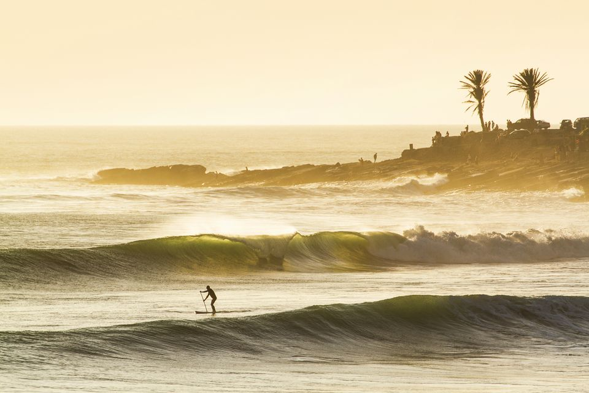
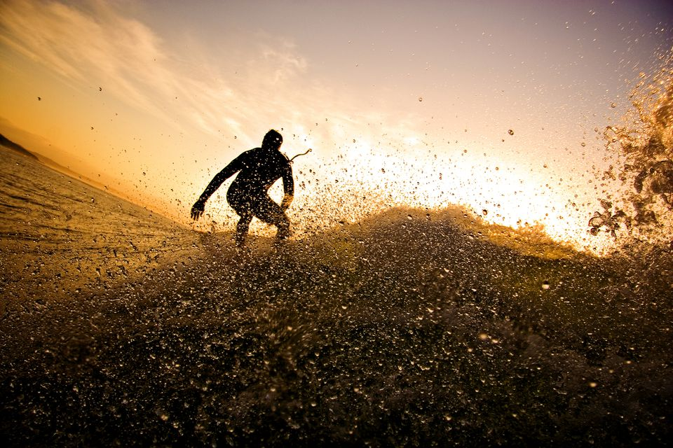
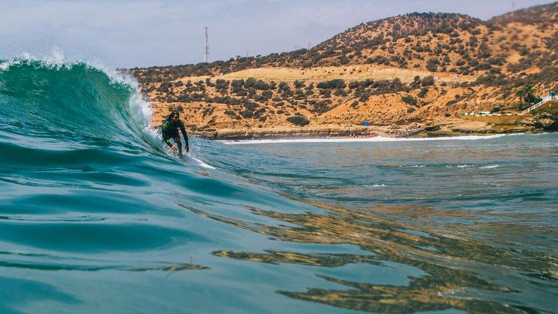

Morocco's Atlantic coast is home to its fair share of surf breaks, some of them world-class. For serious surfers, the best destination is Taghazout, a small fishing village located just north of Agadir.

There are waves for all abilities here, from the challenging Boilers site to laid-back Immesouane, one of the longest rides in the country. Point Anchor is famed for its right-hand break, which runs for 500 meters during a powerful northwest swell

Beginner surfers and kite surfers also flock to popular beach resort Essaouira, where the swells are gentler (though less consistent). Wherever you go, try to time your trip for the September to April winter season, when swells are at their best.